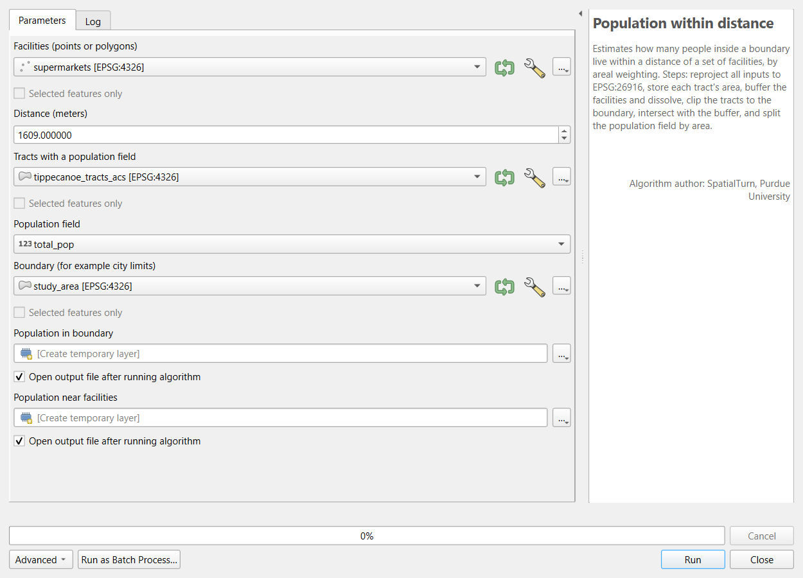
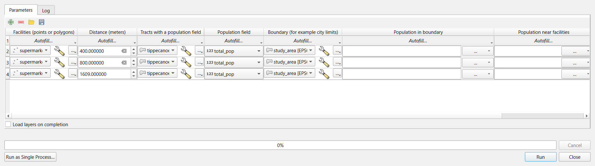

Automating Repeated Steps in QGIS
Last updated on 2026-10-20 | Edit this page
Overview
Questions
- When is it worth automating a processing workflow?
- How do I record, repeat and package processing steps in QGIS?
- How do I make an automated workflow trustworthy?
Objectives
- Find and rerun earlier tools with the Processing History
- Build a model in the Model Designer with inputs, algorithms and outputs
- Test the model against a known result, then run it as a batch for several distances
- Reuse the model for other facilities and other population fields
When to automate
The Geoprocessing episode answered one question: how many people in Lafayette and West Lafayette live within 1 mile of a supermarket? Real projects rarely stop at one answer. A reviewer asks about half a mile; a partner asks about parks; next year’s ACS data arrives; a colleague wants the same numbers for another county. Each request means running the same steps again with one input changed.
Doing that by hand is slow, but the bigger problem is mistakes: a step skipped, an old layer selected in a drop-down list, a distance typed as 1690 instead of 1609. Automation means writing the steps down once, in a form the computer can repeat exactly, with the parts that change made into parameters.
A useful rule of thumb: the first time, do it by hand and understand it; the second time, notice you are repeating yourself; the third time, automate. A one-off task is often not worth automating, but it is still worth recording (see the Introduction).
Levels of automation
| Level | Python | QGIS | Good for |
|---|---|---|---|
| Record | The notebook itself | Processing > History; a tool’s Advanced > Copy as Python Command | Seeing exactly what was run, with which settings |
| Repeat one tool | A for loop around one function call |
Run as Batch Process (one row per run) | The same tool on many inputs or settings |
| Package several steps | A function with parameters | A model in the Model Designer | A workflow you will run again with different inputs |
| Run for every feature | A loop over groupby groups or rows |
The Iterate button (green arrows) next to an input layer | One output per county, per city, per study area |
| Run without you | A script run on a schedule or a server |
qgis_process on the command line |
Regular updates, very large jobs |
This episode covers the first four. The two tools mirror each other closely: a Python function and a QGIS model are both “these steps, with these inputs”; a loop and a batch run are both “again, for each of these”.
Writing steps you can trust
Automated steps run without anyone watching, so they need habits that manual work can do without:
- Test on a known answer. Before running a function or model on new inputs, run it on a case you have already worked out by hand. Here: 77,473 people within 1 mile of a supermarket, from the Geoprocessing episode. If it does not match, find out why before going further.
- Make the parameters explicit. Every value that might change (a distance, a layer, a column) becomes a parameter with a clear name and, if there is a usual value, a default. Values that should not change (the projected CRS, the number of buffer segments) stay inside.
- Check inputs and fail loudly. A workflow that silently buffers in degrees is worse than one that stops with a message. Check the things that commonly go wrong (CRS, expected columns, row counts) at the start, or make the workflow fix them itself (the QGIS model reprojects every input).
- Report what happened. Print or log the number of rows read, codes replaced, features joined and features written. These counts are your evidence that each run worked.
-
Never overwrite inputs. Write results to new layers
or files with systematic names (
near_400.gpkg,near_800.gpkg), so a rerun cannot destroy the raw data or an earlier result. - Keep one failure from stopping everything, but do not hide it. When looping over 92 counties, catch an error for one county, record it and move on, then read the list of failures at the end.
Summaries over many units
Running the same summary for every county raises a classic question: how do you combine tract values into a county value? Add up counts first, then compute rates from the sums (households without a car divided by all households). Averaging tract percentages gives a small rural tract the same weight as a large urban one and answers a different question. Medians cannot be added up at all: a county median income must come from the county-level ACS table, not from the tract medians.
The same automation in Python
The Automating Repeated Steps in Python episode writes the same workflow as a function and runs it in a loop, with the same results. It also cleans the ACS table for all of Indiana and summarizes all 92 counties, a task that shows where code is the better tool.
Hands-on
These steps were checked in QGIS 4.0; the Model Designer looks the same in QGIS 3.34 and later. The workflow packaged here is the one from the Geoprocessing in QGIS episode (Parts 2 to 8): reproject, store tract areas, buffer and dissolve, clip, intersect and split the population by area.
Part 1: Load the inputs
Add these four layers with Layer > Add Layer > Add Vector Layer, Protocol: HTTP(S), cloud, etc., Type: HTTP/HTTPS/FTP:
| Layer | Web address |
|---|---|
| Grocery stores | https://raw.githubusercontent.com/SpatialTurn/CaseStudies/main/data/grocery_stores.geojson |
| City limits | https://raw.githubusercontent.com/SpatialTurn/CaseStudies/main/data/study_area.geojson |
| Tracts with ACS data | https://raw.githubusercontent.com/SpatialTurn/Foundations/main/data/tippecanoe_tracts_acs.geojson |
| Parks | https://raw.githubusercontent.com/SpatialTurn/Foundations/main/data/tippecanoe_parks.geojson |
Then run Extract by attribute on
grocery_stores (store_type =
Supermarket) and rename the result
supermarkets (17 points).
Part 2: The Processing History
Open Processing > History. Every tool you have run is listed with its exact settings, newest first, grouped by date. Double-click the Extract by attribute entry: the tool opens again with the same settings, ready to run with a change. Each tool dialog also has Advanced > Copy as Python Command, which copies the step as one line of PyQGIS code. Together they mean nothing you run in the Processing Toolbox is ever lost; the History is the first place to look when you need to write up your methods.
Part 3: Build a model
The Model Designer chains tools into a new tool of your own. Open it with Processing > Model Designer.
In Model Properties (left), set Name
Population within distanceand GroupSpatialTurn.-
Add the inputs from the Inputs tab by dragging each onto the canvas (or double-clicking it):
Input type Description Settings Vector Features Facilities (points or polygons)Geometry type: any Number Distance (meters)Number type: Float, default 1609Vector Features Tracts with a population fieldGeometry type: polygon Field Population fieldParent layer: Tracts; field type: Numeric; default total_popVector Features Boundary (for example city limits)Geometry type: polygon -
Add the algorithms from the Toolbox tab, in this order. In each dialog, choose the input from the drop-down list (the small button next to a parameter switches between a fixed value, a model input and an algorithm output):
Algorithm Description Settings Reproject layer Reproject facilities Input: the Facilities input; Target CRS: EPSG:26916 Reproject layer Reproject tracts Input: Tracts; EPSG:26916 Reproject layer Reproject boundary Input: Boundary; EPSG:26916 Field calculator Store tract area Input: output of Reproject tracts; field tract_m2, Decimal; formulaarea($geometry)Buffer Buffer and dissolve Input: output of Reproject facilities; Distance: the Distance input; Segments 16; Dissolve result ticked Clip Clip tracts to boundary Input: output of Store tract area; Overlay: output of Reproject boundary Field calculator Population in boundary Input: output of Clip; field pop_in_boundary, Decimal; formulaarea($geometry) / "tract_m2" * attribute(@populationfield); type a name in its output box to make it a model output:Population in boundaryIntersection Intersect with buffer Input: output of Population in boundary; Overlay: output of Buffer and dissolve Field calculator Population near facilities Input: output of Intersect; field pop_near, Decimal; formulaarea($geometry) / "tract_m2" * attribute(@populationfield); model outputPopulation near facilitiesInside a model every input is also a variable, named after its description without spaces, punctuation or capitals: the Population field input is
@populationfield.attribute()reads the field with that name, which is what lets the same model count residents, children or households. Save the model (Model > Save Model). It now appears in the Processing Toolbox under Models.
![Screenshot of the QGIS Model Designer with the Population within distance model, group SpatialTurn. Five yellow input boxes across the top: Facilities (points or polygons), Distance (meters), Tracts with a population field, Population field (linked to the tracts by a dashed line) and Boundary. Below them, white algorithm boxes connected by curved lines: Reproject facilities leads, together with Distance, to Buffer and dissolve; Reproject tracts leads to Store tract area; Store tract area and Reproject boundary lead to Clip tracts to boundary, then Population in boundary; Population in boundary and Buffer and dissolve lead to Intersect with buffer, then Population near facilities. Two green output boxes are attached: Population in boundary and Population near facilities.](au_qgis_modeler.png)
If you are short of time, or want to compare with your own, download
the finished model from
https://raw.githubusercontent.com/SpatialTurn/DataProcessing/main/data/population_within_distance.model3
(save the page as a file), then in the Processing Toolbox click the
Models button (three gears) > Add Model to
Toolbox.
Why does the model reproject everything?
The Geoprocessing episode showed what happens when a layer in degrees is buffered by 1,609: the “buffer” covers the whole Earth. Instead of hoping every user remembers to reproject first, the model does it itself. This is the QGIS version of “check inputs and fail loudly”: make the common mistake impossible.
Part 4: Test the model on a known answer
-
Run the model from the Processing Toolbox (Models > SpatialTurn > Population within distance) with Facilities
supermarkets, Distance1609, Tractstippecanoe_tracts_acs, Population fieldtotal_popand Boundarystudy_area. Leave both outputs as temporary layers.
The model’s own tool dialog. Select all features of Population near facilities and look at the Statistics panel for
pop_near: the sum is 77,473. For Population in boundary, the sum ofpop_in_boundaryis 114,345.
These are exactly the Geoprocessing episode’s numbers (67.8%). Only now is the model ready for new questions.
Part 5: Run it as a batch
Right-click the model in the Toolbox and choose Execute as Batch Process (or click Run as Batch Process in its dialog).
Click the green + to make three rows. In the first row set the four layers and the field; then use Autofill… > Fill Down in each of those columns to copy them to the other rows.
Type the distances 400, 800 and 1609.
-
In each output column, type a layer name (
near_400,near_800,near_1609;city_400and so on for the other output) and choose Create Temporary Layer from its … menu, or save to files instead (Save to File…; its Fill with parameter values option builds the names from the Distance column). Tick Load layers on completion, then Run.
The batch dialog with three distances.
Check: the sums of pop_near are about
7,900 (400 m), 26,600 (800 m) and 77,500 (1 mile):
6.9%, 23.2% and 67.8%
of the 114,345 residents.
Part 6: Reuse the model
Run the model again, changing only the inputs:
-
Facilities
tippecanoe_parks, Distance800: about 81,800 residents, 71.5%, live within 800 m of a park (polygons are buffered from their edges). -
Facilities
supermarkets, Distance1609, Population fieldpop_under18: about 14,800 of 19,540 children, 75.7%.
Two new answers, with no new geoprocessing by hand.
Challenge 1: Batch, model or iterate?
Which QGIS tool would you use?
- Reproject twelve layers to EPSG:26916.
- Every month, rerun a five-step workflow on a new file of reported potholes.
- Make one map layer of tracts for each of the 92 Indiana counties.
- Batch processing of Reproject Layer: one tool, twelve rows (Autofill fills the CRS down).
- A model: several steps in a fixed order, with the new file as an input. Save it so next month’s run takes one dialog.
- Iterate over this layer on the counties input of Clip (or Extract by Location): one output per feature.
Challenge 2: Parameter or not?
You are turning the park access analysis into a model. Which of these should be model inputs, and which should be fixed inside the model? The parks layer; the walking distance; the projected CRS; the population field; the number of buffer segments.
The parks layer, the distance
(default 800) and the population field (default
total_pop) are inputs: they are the things you will change.
The CRS and the number of segments
stay fixed inside, so every run is done the same way and results stay
comparable.
Challenge 3: A suspicious result
A classmate’s version of the model reports that 100% of residents live within 800 m of a supermarket. Their model has no Reproject steps, and their supermarkets layer is in EPSG:4326. What happened?
Without reprojection, Buffer uses the layer’s units: 800 degrees, which covers the whole planet, so every tract is “near”. The fix is the one in this model: reproject inside the model (or check the CRS and stop). Testing the model on the known 1-mile answer first would have caught the problem before any new results were reported.
- Automate work you will repeat; record work you will not (Processing > History)
- A model packages several tools; its inputs are the parts that change
- Test a model on a known answer before using it on new questions
- Run as Batch Process repeats a tool or model with different settings, one row per run
- Iterate over this layer runs a tool once per feature
- Make common mistakes impossible inside the model, for example by reprojecting every input